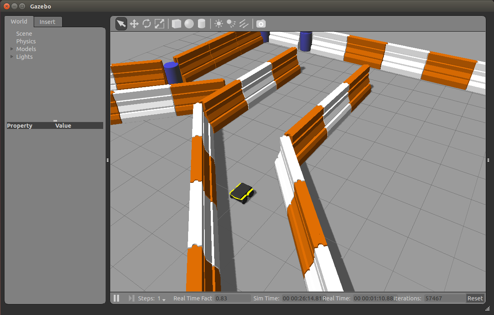

Whether you actually have a Jackal robot or not, the Jackal simulator is a great way to get started with ROS robot development. In this tutorial, we will go through the basics of starting Gazebo and Rviz and how to drive your Jackal around.
To get started with the Jackal simulation, make sure you have a working ROS installation set up on your Ubuntu desktop, and install the Jackal-specific metapackages for desktop and simulation:
sudo apt-get install ros-indigo-jackal-simulator ros-indigo-jackal-desktop
Gazebo is the most common simulation tool used in ROS. Jackal’s model in Gazebo include reasonable approximations of its dynamics, including wheel slippage, skidding, and inertia. To launch simulated Jackal in a simple example world, run the following command:
roslaunch jackal_gazebo jackal_world.launch
You should see the following window appear, or something like it. You can adjust the camera angle by clicking and dragging while holding CTRL, ALT, or the shift key:
The window which you are looking at is the Gazebo Client. This window shows you the “true” state of the simulated world which the robot exists in. It communicates on the backend with the Gazebo Server, which is doing the heavy lifting of actually maintaining the simulated world. At the moment, you’re running both the client and server locally on your own machine, but some advanced users may choose to run heavy duty simulations on separate hardware and connect to them over the network.
Note that like Jackal itself, Jackal’s simulator comes in multiple flavours called configs. A common one which you will need often is the front_laser config. If you close the Gazebo window, and then CTRL-C out of the terminal process, you can re-launch the simulator with a specific config:
roslaunch jackal_gazebo jackal_world.launch config:=front_laser
You should now see the simulator running with the simulated SICK LMS111 laser present:
Gazebo not only simulates the physical presence of the laser scanner, it also provides simulated data which reflects the robot’s surroundings in its simulated world. We will visualize the simulated laser scanner data shortly.
The next tool we will encounter is rviz. Although superficially similar in appearance to Gazebo, rviz has a very different purpose— unlike Gazebo, which shows the reality of the simulated world, rviz shows the robot’s perception of its world, whether real or simulated. So while Gazebo won’t be used with your real Jackal, rviz is used with both.
You can using the following launch invocation to start rviz with a pre-cooked configuration suitable for visualizing any standard Jackal config:
roslaunch jackal_viz view_robot.launch
You should see rviz appear:
The rviz display only shows what the robot knows about its world, which presently, is nothing. Because the robot doesn’t yet know about the barriers which exist in its Gazebo world, they’re not shown here.
What is shown, however, is Jackal’s interactive markers. These are the simplest way to command your robot to move around. If you don’t see them in your rviz display, select the Interact tool from the top toolbar. You should see red arrows and a blue circle appear around the Jackal model.
Drag the red arrows in Rviz to move in the linear x and the blue circle to move in the angular z. Rviz shows you Jackal moving relative to its odometric frame, but it is also moving relative to the simulated world supplied by Gazebo. If you click over to the Gazebo window, you will see Jackal moving within its simulated world. Or, if you drive real Jackal using this method, it will have moved in the real world.
Once you start your own development, have your nodes send geometry_msgs/Twist commands to the cmd_vel topic to drive Jackal, either real or simulated. This is the standard ROS interface to differential-drive and holonomic ground vehicles.
The rviz tool is capable of visualizing many common robotic sensors, as well as other data feeds which can give us clues as to what the robot is doing and why. A great place to start with this is adding the LaserScan plugin to visualize the laser scans being produced by the simulated LMS111. In the left panel, click the “Add” button, then select the “Topics” tab, and then select the /scan topic:
Click OK, and you should see laser scan points now visible in the rviz window, relative to the robot:
If you use the interactive markers to drive around, you’ll notice that the laser scan points move a little bit but generally stay where they are. This is the first step toward map making using gmapping, which is covered in the next tutorial, Navigating with Jackal.